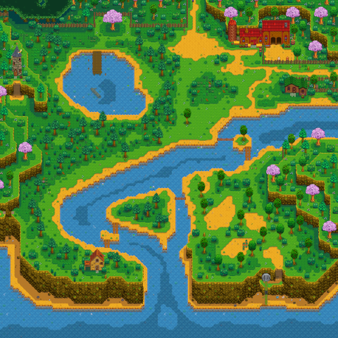

Bubble Finder Tool for Stardew Valley
How to use:
Upload your save file.
Hover over bubbles in list to see their location on the map
Tips:
Change the viewed day by inputing a new one!
Change the location viewed in the dropdown menu!
Mountain
Town
Forest
Beach
